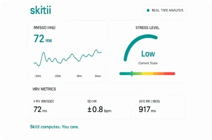
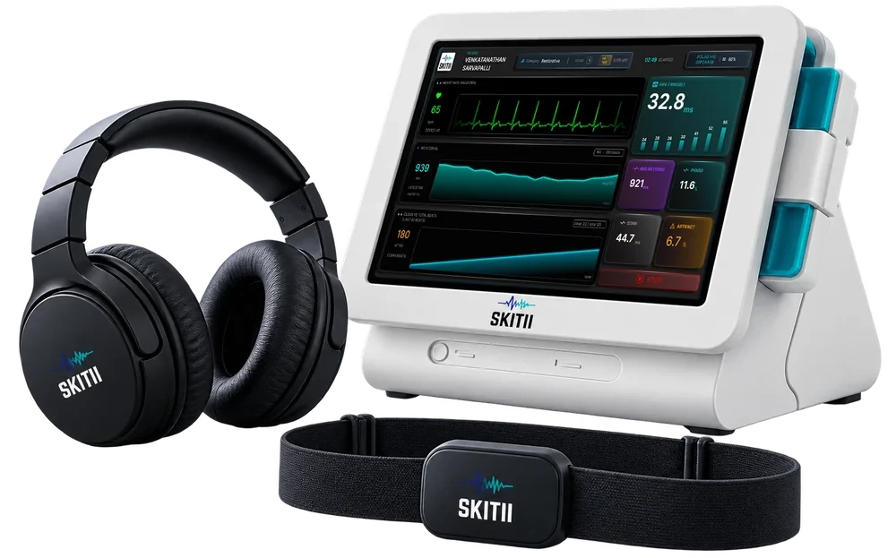
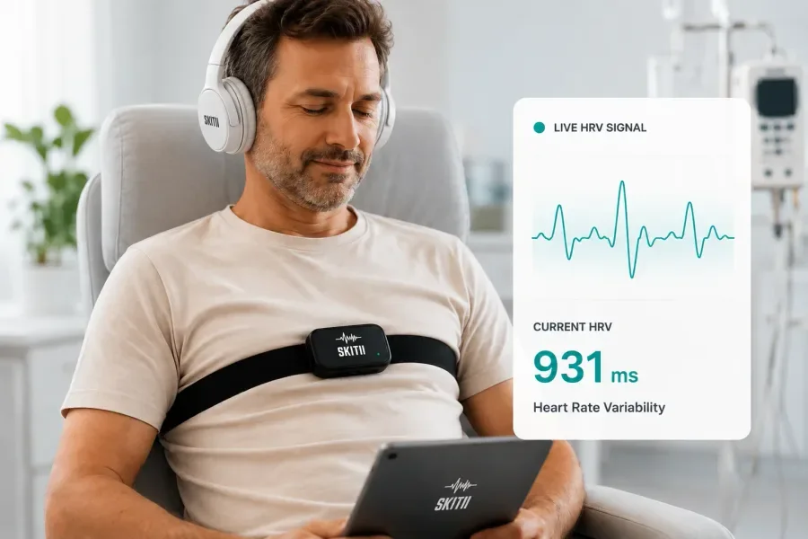
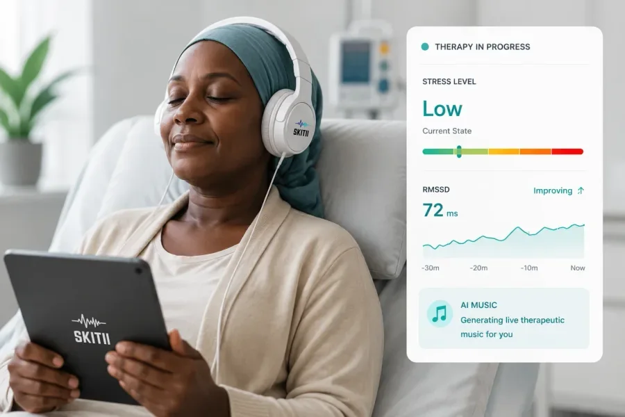

Oncologists and care teams
Review the device, the session flow and the clinical evaluation in progress.
Request a demoSkitii is an investigational HRV-adaptive music therapy device designed to support anxiety management in oncology care.
Illustrative graphic. Not patient data. Replace with approved product photography.
Skitii reads heart rate variability (HRV) from a wearable sensor and uses it to guide adaptive instrumental music during a session. It is designed to support anxiety management in oncology care, not to replace standard treatment.


Review the device, the session flow and the clinical evaluation in progress.
Request a demoUnderstand the equipment, the setup and what a clinical collaboration involves.
Talk to the teamAsk about trial design, measurement approach and research partnerships.
Request trial informationClinicians usually rely on what patients report. Skitii adds a physiological signal to the picture, so support can respond during the session.
of patients reported high anxiety during treatment, as cited on skitii.com.
View source (PMC)higher dropout and relapse reported in anxious patients, as cited on skitii.com.
View source (PMC)Figures are taken from skitii.com and its linked sources. Verify wording against the papers before publishing.
A continuous loop during each session: the device senses an HRV signal, adapts the music, and records the session for the care team.
During treatment, the sensor captures the tiny gaps between heartbeats. This heart rate variability (HRV) is a physiological signal the system uses to adapt. It is not a diagnosis of emotion.

Skitii calculates RMSSD from the HRV signal and adjusts the music as the signal changes, rather than playing a fixed playlist.

Signals from each session are recorded so clinicians can review how HRV changed over time. Placeholder copy: confirm wording with the Skitii team.
The loop repeats throughout the session, so the music keeps following the signal.
We didn’t set out to build a product. We set out to fix something that was hurting people every single day.Dr. Chirag and Darshana, founders of Skitii
Physician, onco-anxiologist
More than 20 years in clinical medicine. He saw how fear shapes the treatment experience and set out to build a device that responds to the body’s signal.
LinkedIn profileCo-founder, patient experience and strategy
Joined to make sure the science reaches patients, not just research papers.
LinkedIn profileWhat we can show today, and where the work is still in progress.
Quality management certification, issued by MTIC InterCert to Mindful Gurukul Private Limited.
In an active trial running across multiple cities.
International filings covering the closed-loop system, across 150+ countries.
Medical device approval in progress.
Skitii is an investigational, non-pharmacological device. It is not a treatment for cancer and is not intended to diagnose, cure, or prevent any disease. It is under clinical evaluation, and regulatory licensing is in progress.
Request trial information or book a clinical demonstration with the Skitii team.
Tell us about your organisation and what you would like to see. The team will reply by email.
Email hello@skitii.com
Phone +91 98209 34635
Mindful Gurukul Private Limited
707, 7th Floor, Prasad Chambers, Tata Rd No 2, Charni Road East, Mumbai 400004